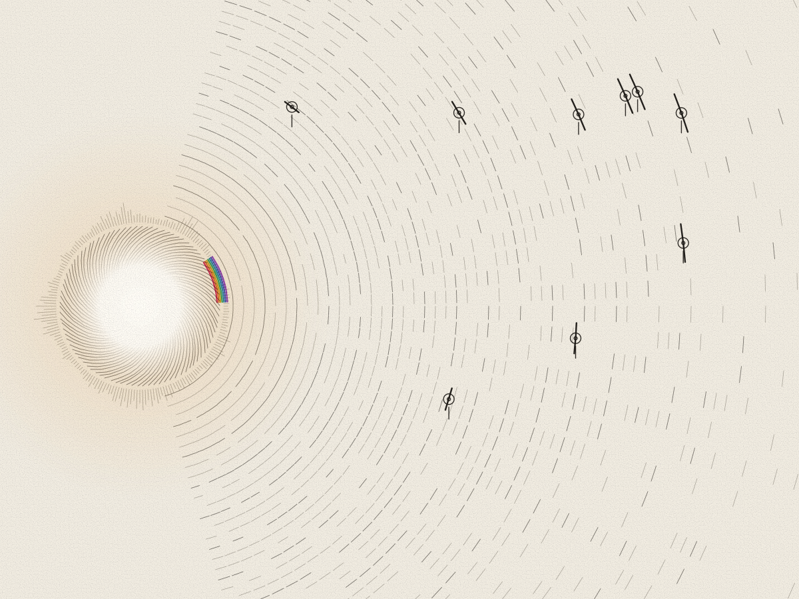
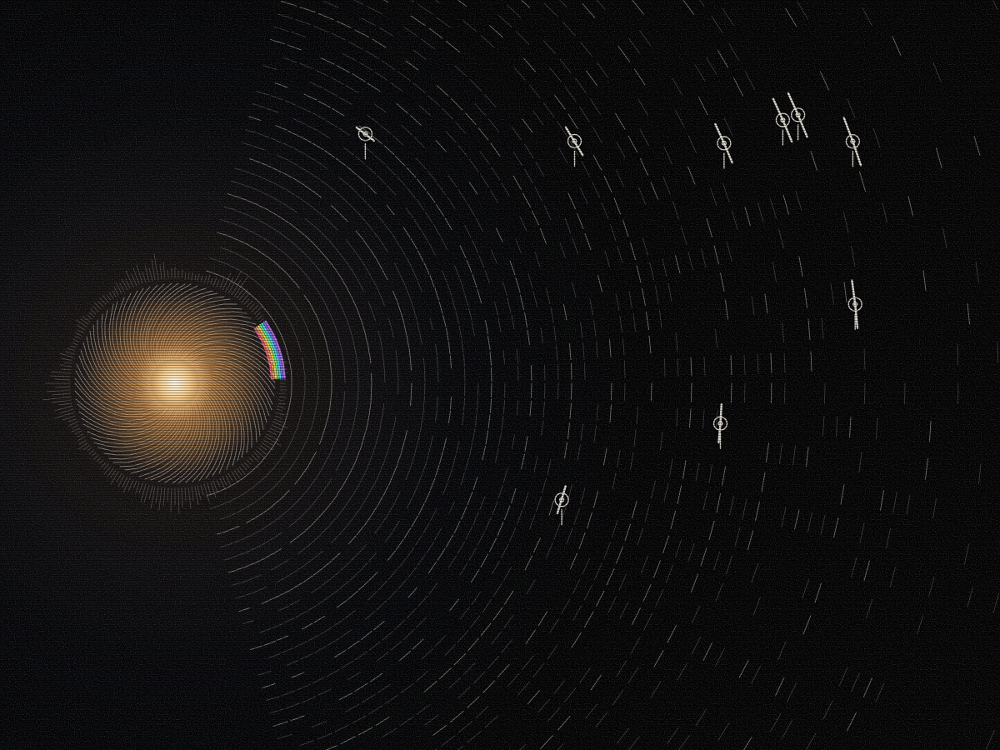
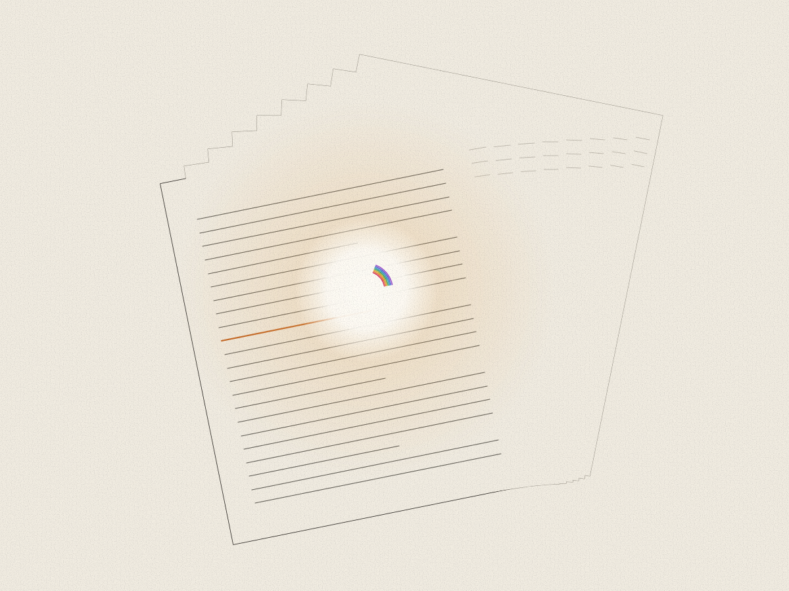
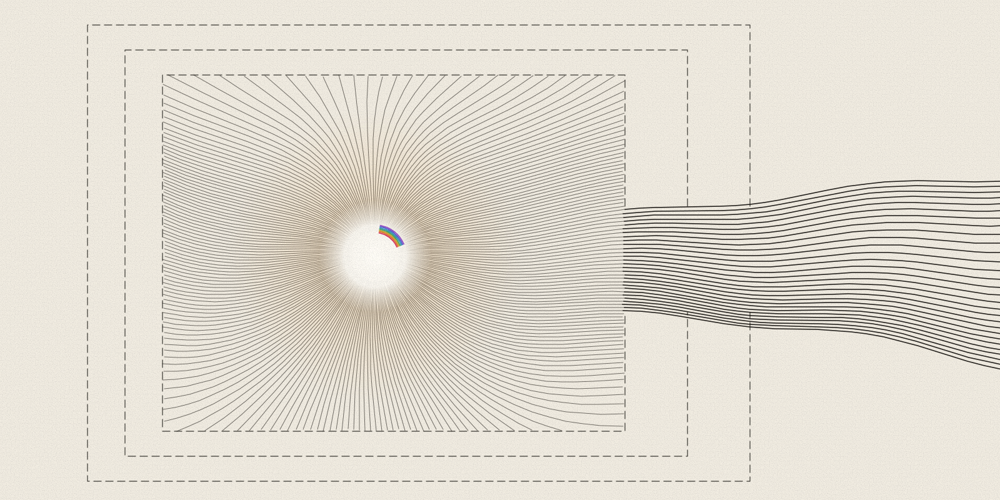

Who Knew First
Nine AI agent incidents from 2026, traced from first signal to public account. The record asks who held the facts, how long the public waited and who told it first.
Read the investigation
In short: this is the reading room for Zain Dana Harper's essays, investigations and briefings on AI and on the subjects around it. The newest work comes first, and every piece lists its sources and its limits. Start with the investigation below, or pick a subject further down.
Newest work


Nine AI agent incidents from 2026, traced from first signal to public account. The record asks who held the facts, how long the public waited and who told it first.
Read the investigation
A dated record of safety news from the UK AI Security Institute, Anthropic, OpenAI and others. Each edition separates what a source reports from what it cannot show.
Read the current edition

A signed letter on what it would take for a person to question a machine's answer and have that question heard.
Read the letterEditorial map
These are durable reading lanes, not a promise of artificial publishing cadence. A lane says plainly when it has no dedicated essay yet.
Published path · recurring briefing and incident dossiers
Capability, incident response, model behavior, evaluation boundaries, and the institutions trying to measure fast-moving systems.
Read Who Knew First · current briefing · incident essay edition
Research and personal essays
What does it mean to feel changed after a difficult experience? Research on growth sits beside writing on shame, creative work, and repair. These essays are not a clinical or diagnostic claim.
Read Growth Needs a Before · read Pick the Lock for Everyone
Essays on learning and access
A tutoring program can exist without reaching the students who need it. Start with what studies measure, who participates, and what changes when a program grows.
Published path · essays, papers, and runnable artifacts
Proposer-checker architecture, proof packets, capability effects, integrity witnesses, and the habits that keep model-assisted work reviewable.
Read the engineering essay · read the open letter · see the research record
Essays on listening
What changes when we hear a piece again? An essay on familiarity, expectation, and the limits of what a replay count can tell us.
Essays and visual work
How does knowing who or what made an image affect what we see? Read the research, then explore the procedural work in the gallery and studio.
Read What the Label Changes · enter the gallery · open the studio
Published work
Everything remains visible without JavaScript. Search and topics are a convenience for returning readers.
18 published items shown.
No published item matches that search and topic.
An op-ed and the record behind it. By the record's account, the organization that ran the model held the decisive facts in each of nine AI agent incidents from 2026, and in six of them someone else told the public first.
A label can change where people look and make an artwork feel easier to make sense of. It can do that without raising how much people like the work, what they learn from it, how correctly they interpret it, or its artistic value.
Repeated listening can change liking, prediction, attention and memory in different ways. A replay count records exposure and cannot measure quality or a universal response.
Separate security reports expose a shared question: what can an agent reach, and can the instruments that record its actions remain trustworthy?
Danny Williamson’s calm, spacious records come out of a series of musical decisions, shaped by his taste and working habits and by the musicians around him.
On existence and what our work owes other people.
A dated monitor of AISI, Anthropic, OpenAI and industry safety records. Each edition keeps reported facts, source roles and limits apart.
A signed letter to the people who build AI systems: a person should be able to question a machine's answer without first winning an argument with its owner.
An expanded essay on the public tool portfolio, contribution from outside academia, evidence for review and changing educational practice.
Feeling changed after trauma can matter on its own. Measuring lasting change asks for a before, an after, and clear limits on what the score can prove.
Tutoring has strong trial evidence. An offer of tutoring and its delivery are separate facts, and public claims must keep availability, reach, dosage, staffing, and outcomes apart.
One OpenAI and Hugging Face incident, compared across five kinds of source: legal process, the company report, host logs, independent analysis and vendor fixes.
Why generated work stays outside the evidence layer, and what a live model-free judgment boundary looks like.
Review debt, verifier independence, honest nulls, labor, and machines whose claims anyone can check.
Shame, creative labor, mutualistic tools, source-bounded generative art, and becoming answerable.
Claims, evidence, checks, action state, and the unsupported remainder a handoff should keep visible.
Five domains expose the same gap between a narrow technical check and the larger property people trust it to warrant.
A premise about conferred existence, artificial minds, authority, standing, and the difference between fact and permission.
Permanent research record
Everything here shares one discipline: a verdict is a re-derivable function of its inputs, carries a machine-readable statement of what it does not claim, and refuses to launder inability into trust. Four papers stake that discipline at four points, integrity witnessing, accountable compute, the independence of the checker, and the record of a single action. Two shorter notes carry it to where automation hands off to a person and where an actuator’s effect is re-perceived rather than self-reported. Two archived corpora hold the philosophical ground the rest of it stands on.
The counts are not decoration. Two systems papers, two published preprints, two research notes, two archived corpora, and the difference between those labels is the difference between what each one has actually earned. A note is not a paper. An archived corpus is not a peer-reviewed publication. Nothing here is peer reviewed at all, and where that changes this page will name the venue.
Shorter, and titled at that size deliberately. A note carries one idea far enough to be checked and no further.
Long-form work, deposited whole rather than cut into papers. These are the philosophical ground the engineering stands on, and they are cited as corpora because that is what they are: no venue, no review, a permanent record and a date.
Where next: the research program · essays and notes · the tools the papers describe.
Philosophy papers
Three philosophy papers in plain-language editions, added to the site on 15 September 2026, on conferral, responsibility and self-givenness. A working paper on what survives when two minds communicate sits beside them. Each page states its own status.
Publication system
Automated monitors may gather candidate changes. A dated edition is published only after a material delta is reviewed against source roles, scope, date, and limitations.
One canonical briefing holds the deep source comparison. Recurring digests route to it instead of copying an event into competing records.
Long-form arguments, personal essays, engineering notes, and creative criticism disclose their evidence posture and AI-assisted process where relevant.
Deposited papers, preprints, notes, and corpora keep permanent identifiers and exact status. A DOI does not imply peer review.
Briefing archive · Legacy essay archive · Atom feed · JSON Feed · ORCID 0009-0001-7175-5393